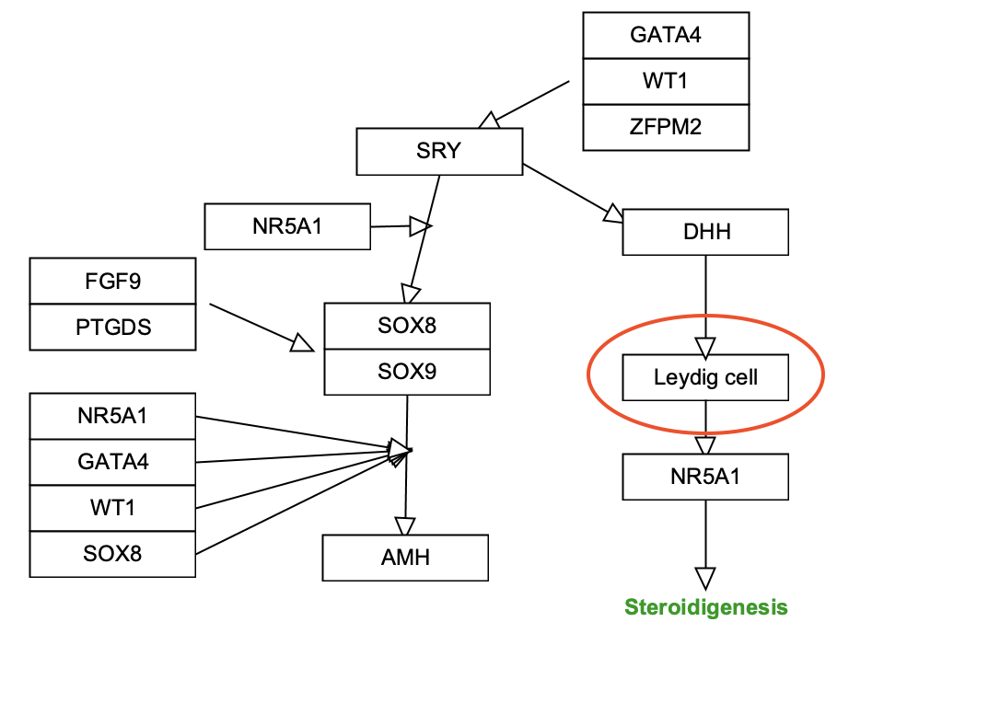

Background
When curating biological pathways from literature and existing pathway figures, there are sometimes entities in the original figure that do not fit into the standard data node types of Gene Product, Protein, Metabolite, Pathway and RNA. In these instances, rather than adding a graphical label, it can be useful to add a data node of type Unknown which can be annotated with an external identifier. The example in this exercise uses a Wikidata identifier for a cell type. Wikidata is a free and open knowledge base that acts as central storage for the structured data of its Wikimedia sister projects including Wikipedia, Wikivoyage, Wiktionary, Wikisource, and others.
Your Mission
In this challenge, you will utilize Wikidata to annotate a node of type Unknown. The starter pathway is a modified subset of the Somatic sex determination pathway.

- We will be replacing the graphical label for Leydig cell with a data node, so first we need to find the Wikidata identifier for "Leydig cell". Navigate to Wikidata and search for "Leydig cell". Record the Wikidata identifier (Q636846).
- Download the starter pathway here: draw-unknown-node.gpml.
- Open the pathway in PathVisio, and delete the graphical label Leydig cell.
- Add a new data node of type Unknown.
- Double-click on the new node, and enter the Wikidata identifier in the Identifier field, select Wikidata in the Database drop-down, and enter Leydig cell as the Text label. Click Ok to exit.
- Connect the two interactions from DHH and to NR5A1 to the new node.
- Save your work as a GPML file under File > Save As.
- Drag-and-drop the GPML file below to check if it is correct.